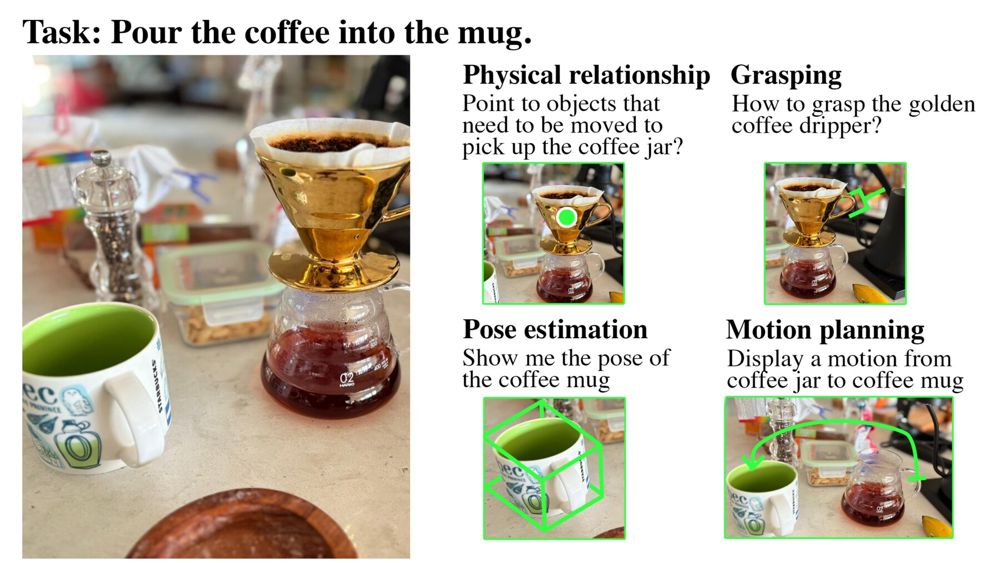
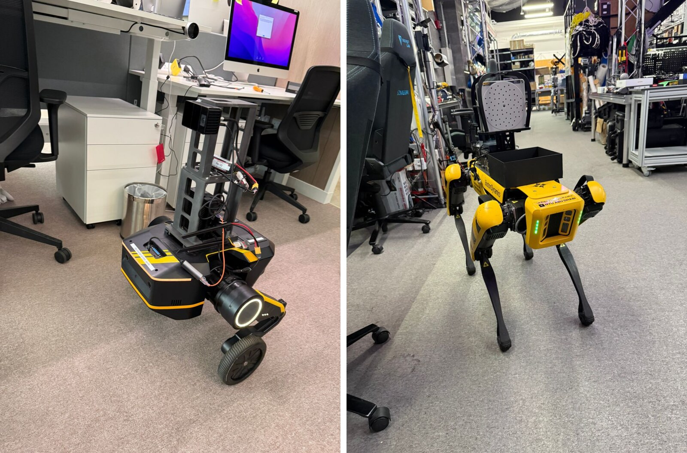
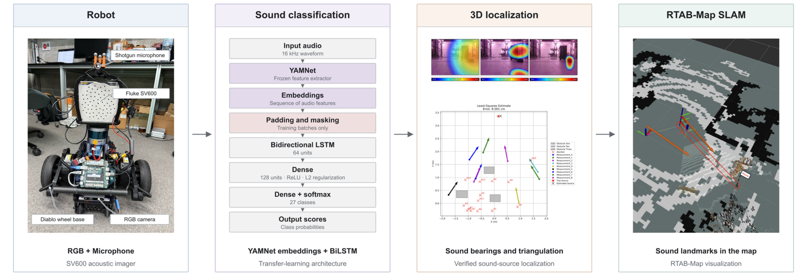
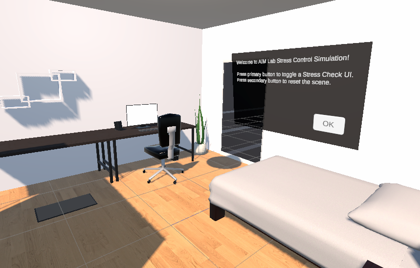

CLARO: Clutter-Aware Robot Orchestrator for Open-Vocabulary Grasping Using VLM Agents
WACV 2027
A vision-language model orchestrator for occlusion-aware, open-vocabulary grasping in cluttered scenes.
About me
I'm a Computer Engineering undergraduate at NYU Abu Dhabi, graduating in May 2027. I am broadly interested in embodied AI, particularly robot perception and spatial reasoning for navigation and manipulation. My work explores how vision-language models and multimodal sensing can help robots understand and interact with the physical world.

CoRL 2026 Workshop
Long-horizon navigation that splits a route into tracklets, with a VLM agent that monitors and corrects a local policy on a G1 humanoid.
* Equal contribution

A full object-goal navigation system that combines SLAM, semantic 3D Gaussian Splatting, scene graphs, and spatial reasoning, with a modular, embodiment-agnostic design for TITA and Boston Dynamics Spot.
Long-horizon indoor and outdoor navigation for a Unitree G1 humanoid, focused on real-world challenges such as safety, robustness, and interactions. Uses high-fidelity 3D Gaussian Splatting (3DGS) simulation to fine-tune and simulate high-level policies.
Autonomous maze navigation combining visual localization, online mapping, and direction-aware A* planning. Placed first in the course challenge with a 9.05 s navigation time, 51.7% faster than second place, and 0.051 m final position error.

Audio-enhanced semantic mapping combining sound classification and 3D source localization to support loop closure for RTAB-Map on a mobile robot.

An immersive Unity environment for Meta Quest 3 combining visual, auditory, and haptic stimuli to support emotion and stress regulation.
Expected May 2027
B.S. in Computer Engineering
September 2025–May 2026
Study away
I am happy to talk about research and collaborations!